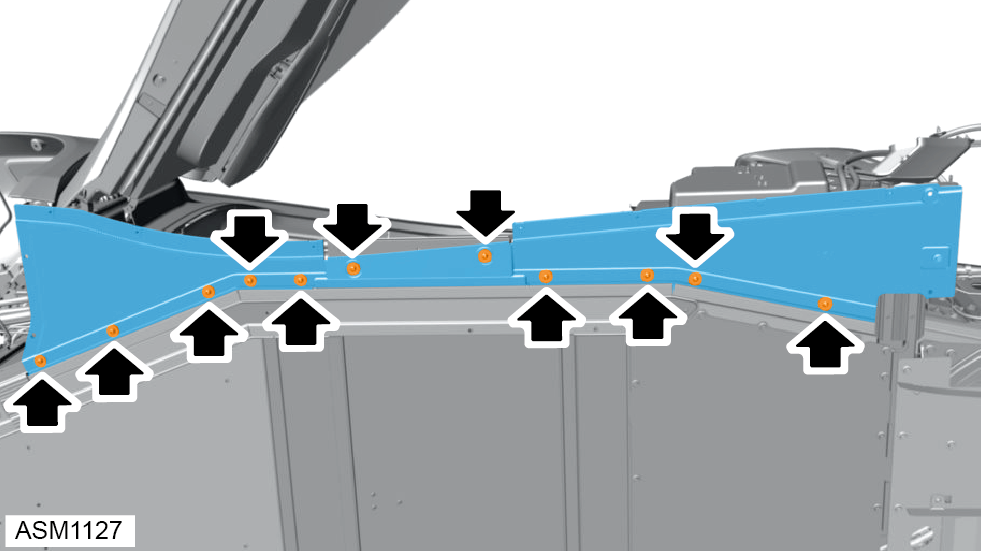
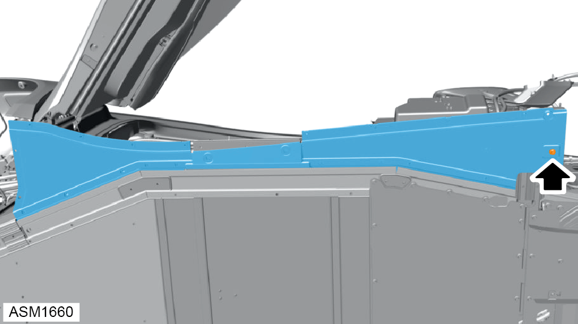

Door Sill Inner Panel - Left Side
Print
Operation Code: 10.02.15-02
Removal
- Remove door sill outer panel left side. Refer to procedure.

- Remove M5x18 bolts (x11) and washers securing door sill inner panel to underbody assembly. Torque 6 Nm.
NOTE: Always record quantity and
fitted position of washers.

- Remove M6x20 bolt securing rear of door sill inner panel to bracket. Torque 10 Nm.
- Remove door sill inner panel.
Installation
- Installation is the reverse of removal procedure.